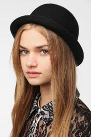
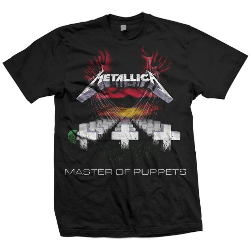
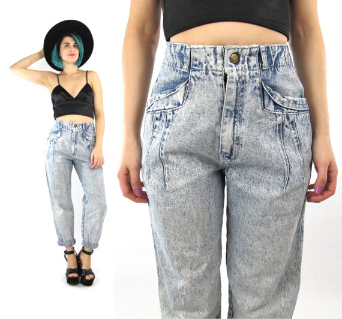

When comes to fashion you need to think about a few things. Is it local? Is it old? Is it second hand? Unlike music, you should be wearing clothes that are pretty old, preferably from the 90s - early 2000s. For ladies, you want to look as close to a sweet old grandma as you can. For men, you can't go wrong wearing flannel and a beanie. Rememeber, when it comes to fashion, it's all about Irony.
Consider wearing a sunhat, even when it's not sunny out or wear a beanie or a silly hat with a short brim like you're Charlie Chaplin.

Avoid name brands at all cost, never go to places like old navy or GAP. Instead, you should only shop on Etsy, and at your local thrift store, though never go to a Goodwill, the Goodwill is not deck (deck is total hipster slang, and you should start using it instead of cool).
You will look really rad if you wear 80s metal band t-shirts. Bands like Iron Madian and Metalica, but never EVER actually listen to their music.

Also try to wear only skinny jeans, or high waisted "mom jeans," those are really in right now.

And don't forget about the thick rimmed glasses, even if you don't need them. WEAR THE THICK RIMMED GLASSES.
Just remember, when you're walking out the door ask yourself: Am I being ironic enough?